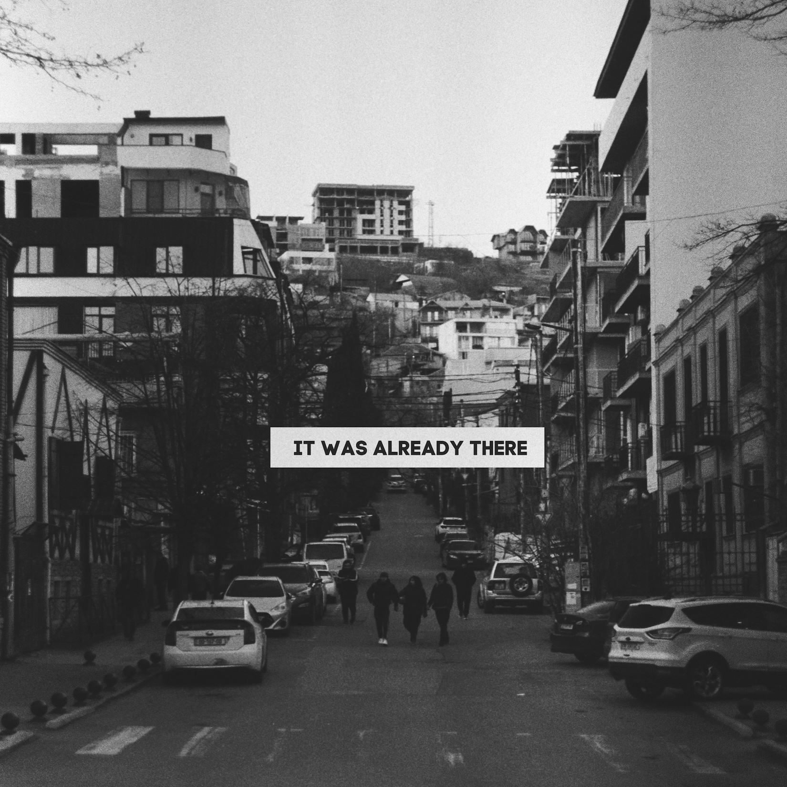
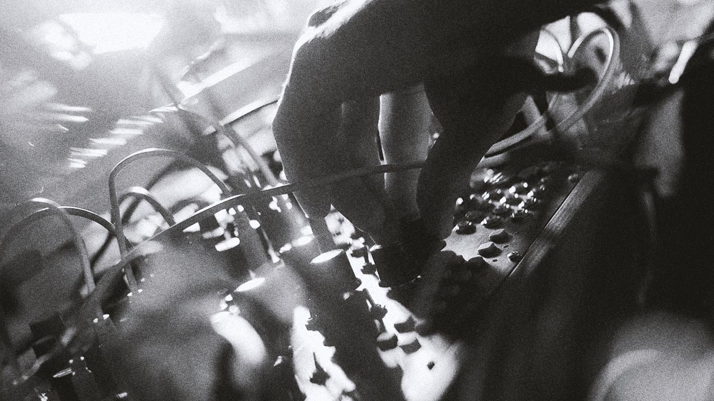

2026
Recorded during PeaceTime Station N88, a live transmission on March 24, 2026.

I played modular synthesizers, and the music reacted to what was happening and sounding at that very moment, on the radio and around me.
Then reality started reacting too. It came into the music on its own, naturally, at times almost melodically.
At some point I was no longer playing alone. We were making something together, and it was a real joy.
Later assembled and released as an album.